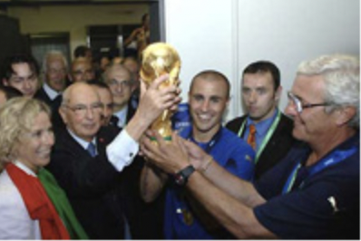

Виды спорта:
ФУТБОЛ
 Футбол — командный вид спорта,
в котором целью является забить мяч в ворота
соперника ногами или другими частями тела (кроме рук)
большее количество раз, чем команда соперника.
В настоящее время самый популярный и массовый вид спорта в мире.
Есть 17 официальных правил игры, каждое из которых
содержит список оговорок и руководящих принципов.
Эти правила предназначены для применения на всех уровнях футбола,
хотя есть некоторые изменения для таких групп, как юниоры,
взрослые, женщины и люди с ограниченными физическими возможностями.
Законы очень часто формулировались в общих чертах, которые позволяют упростить их применения в зависимости от характера игры.